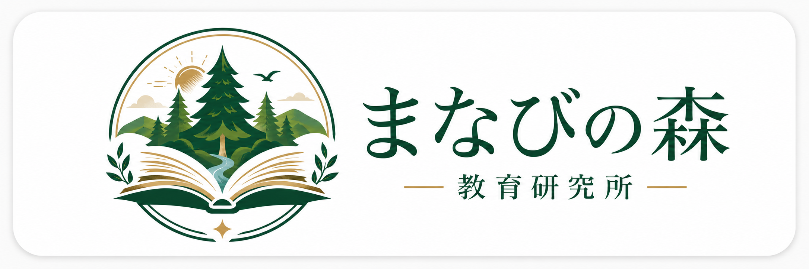

教育コンサルティング
学校・教育機関・家庭・地域団体に向けて、教育課題の整理と改善提案を行います。 学びの場づくり、支援体制の見直し、教育実践に関する相談に対応します。

教育現場の課題は、制度だけではなく、日々の実践の中で見えてきます。 当社は、現場経験と教育実践を土台に、子ども一人ひとりに合った学びの環境づくりを支援します。
特別支援教育・インクルーシブ教育の知見を基盤に、 学校・家庭・地域のあいだをつなぐ支援を行っています。 理念だけで終わらず、実際の現場で使える形に落とし込むことを重視しています。
学校、教育機関、保護者、地域団体、学習支援に関わる個人・団体からのご相談を受けています。 ご依頼内容に応じて、対面・オンラインの両方に対応します。
各事業について、対象、提供内容、形式、ご依頼時の進め方が分かるように整理しています。
学校・教育機関・家庭・地域団体に向けて、教育課題の整理と改善提案を行います。 学びの場づくり、支援体制の見直し、教育実践に関する相談に対応します。
学校や地域向けに、教育実践に役立つ研修・講座を企画し、運営します。 内容は、ご依頼先の課題や参加対象に合わせて調整します。
自然の中での体験を通して、探究心や生活感覚を育むプログラムを企画・運営します。 実施内容は、対象年齢や目的に応じて調整します。
学校・家庭・地域をつなぐ教育イベントの企画と運営を行います。 内容に応じて、企画立案から当日の進行まで対応します。
ご相談内容を確認したうえで、実施方法・費用・日程を調整します。 ご依頼前に内容と費用を確認できる流れにしています。
メールにて、ご相談内容・対象・ご希望の時期や形式をお知らせください。
通常2営業日以内を目安に返信し、必要に応じて追加確認や日程調整を行います。
目的や対象に応じた実施案と費用をご案内します。内容確定前に金額をご確認いただけます。
確定した内容に基づき、相談、研修、イベント、教材提供を行います。
必要に応じて振り返りや追加相談に対応します。
当社では、教育コンテンツの企画・制作・販売も行っています。 現在公開中の教材は以下のとおりです。
中学生から社会人までを対象にした、1日45分・30日間のカリキュラム型教材です。
保護者・支援員のための実践ツール。世界的な研究知見に基づく5種のワークシートを収録。
特別支援教育の専門経験が少ないまま担任を任された先生へ。児童理解、保護者面談、校内相談を最初の30日で整理するPDF教材です。
保護者・支援員の方に向けて、特別支援教育に関する情報をお届けしています。
「障害受容」とは何か。慢性的悲哀モデルを軸に、就学前の保護者が直面する5つの現実と就学相談の仕組みを解説します。
記事を読む →就労移行支援・A型・B型・生活介護・グループホーム――卒業後の進路先を整理し、在学中からできることをお伝えします。
記事を読む →【障害種別シリーズ】発達障害をひとつずつ正確に知る
前頭前野の機能とドーパミン系の違いから、ADHDの脳の仕組みをわかりやすく解説します。
記事を読む →心の理論・サリーアン課題から、「空気を読む」という複雑な処理を解説します。
記事を読む →ディスレクシア・ディスグラフィア・ディスカリキュリアの3タイプと支援を解説します。
記事を読む →認知度が低いDCDの特徴・合併率・自己肯定感への影響を解説します。
記事を読む →【特別支援学校シリーズ】
【保護者向け実践・支援手法シリーズ】
2024年から私立学校も義務化。申請手順・配慮例・伝え方のコツ。
記事を読む →3制度の比較表と就学先の選び方。在籍変更の方法も解説。
記事を読む →非課税世帯は0円。申請手順・2024年改定・事業所の選び方。
記事を読む →構造化の4要素と家庭で今日からできる実践方法。
記事を読む →強化・消去・プロンプトの基本とDTT・NATの違いを解説。
記事を読む →5つのコアコンピテンシーと家庭でできるSEL実践。
記事を読む →教育現場での経験を土台に、実践に結びつく支援を行います。
特別支援教育、インクルーシブ教育、子どもの学びの場づくり、 体験学習、教材開発などを中心に、現場に即した支援を行います。
ご相談内容に応じて、個別相談、研修、教材提供、企画支援の形で対応します。
法人情報・連絡先・事業領域を一覧で確認できます。
| 会社名 | 合同会社まなびの森教育研究所 |
|---|---|
| 英語名 | Manabi no Mori Educational Research Institute LLC |
| 設立 | 2026年4月1日 |
| 所在地 | 千葉県千葉市美浜区幸町2-16-13-505 |
| 事業内容 | 教育コンサルティング／研修の企画・実施／自然体験学習プログラムの企画・運営／教育関連イベントの企画・運営／教育教材の企画・販売 |
| お問い合わせ | manabinomorikyouikuken@gmail.com |
| 対応方法 | メールでのお問い合わせを受け付けています。内容確認後、必要に応じて対面・オンラインで対応します。 |
特別支援教育・発達支援・学習サポートなど、お子さんのことで気になることをAIに相談できます。24時間対応・完全無料。
※ AIによる情報提供です。診断・治療の代替にはなりません。重要なご相談はメールまたは専門家へ。
ご質問、ご依頼、取材、教材に関するお問い合わせは、メールにてご連絡ください。 通常2営業日以内を目安に返信します。